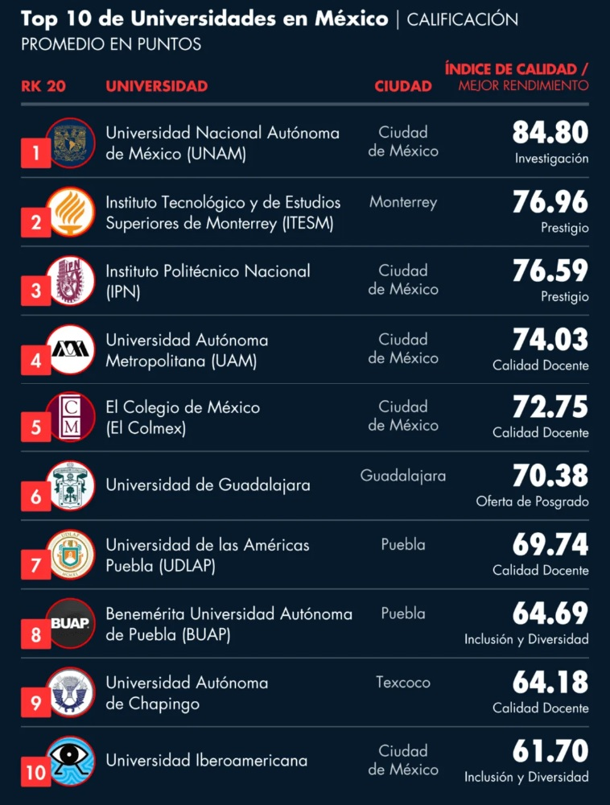

Ranking de las Mejores Universidades de Mexico
Conozca cuales son las mejores universidades de Mexico. Estos son los resultados del ranking de Universidades de Mexico 2020 elaborado por la revista AmericaEconomia.
La Universidad Nacional Autonoma de Mexico, imbatible. Los Pumas alcanzan los maximos puntajes en Investigacion, Oferta de Posgrados e Internacionalizacion, con lo que nuevamente se ubican primeros en la edicion 2020 del ranking.
Los escoltas, el Tec. de Monterrey (2) y el Instituto Politecnico Nacional (3 ), palmo a palmo. En esta version del ranking solo los separan 0.4 pts. La institucion regiomontana se impone por sobre el resto en Acreditacion y Prestigio, y aunque el IPN no obtiene el primer lugar en ninguna de las dimensiones, da dura pelea. En Investigacion, por ejemplo, se adjudica el segundo lugar de la dimension, y en el indicador de Productividad ISI aparece como la mejor institucion de las 50 rankeadas, con 1.38 papers por investigador.
La Universidad Autonoma Metropolitana, la mas seria contendiente. Su cuarta posicion en el listado general refleja el equilibrio de su proyecto educativo a lo largo de las siete dimensiones evaluadas, motivo por el cual no es sorpresa que se ubique dentro de los primeros cinco lugares en la mayoria de los indicadores. Este año hace suyo el cuarto lugar en Calidad Docente, y en el indicador de Formacion del plantel docente destaca, con el 47.8%, como la tercera universidad con la mejor proporcion de profesores con doctorado dentro del claustro.
Estas mismas cuatro instituciones de educacion superior (IES) han aparecido en las primeras posiciones del ranking desde su primera version en 2012 y, salvo un enroque entre el IPN y el Tec en 2014, han conservado el mismo orden.

El top 5 de esta edicion del ranking lo completa El Colegio de Mexico. Esta institucion sube dos puestos en el ranking general, repitiendo su mejor ubicacion alcanzada en la version 2015, de la mano de sus excepcionales resultados en la dimension Calidad Docente, donde son los indiscutidos lideres. Y asi lo refleja el hecho de que el 76.9% del total de sus profesores cuenta con doctorado como mejor grado academico alcanzado, el 100% de sus profesores estan contratados a tiempo completo y son acreedores del increible ratio de 0.5 estudiantes de licenciatura por docente o, lo que es lo mismo, cuentan con 2 profesores disponibles por cada estudiante.
La dimension Calidad Docente, que es la que mas peso tiene en el ranking, tiene ademas una particularidad interesante: los primeros lugares no pertenecen, salvo la UAM, a las tres primeras IES del ranking general. Las luces en este aspecto se las llevan otras universidades, todas ellas, eso si, dentro de las 10 mejores en el listado general. Asi, la UDLAP (7 ) repite por tercer año consecutivo el segundo lugar en esta dimension: 69.3% de profesores con doctorado y 53.9% de profesores a tiempo completo son algunas de sus credenciales. El podio lo completa la Universidad Autonoma Chapingo (9 ), que en 2017 fue segunda en esta dimension y desde 2018 viene siendo tercera, que destaca con un notable 93.6% de profesores a tiempo completo.
Y un poco mas abajo en el listado de Calidad Docente aparecen otras universidades que, sin pertenecer al grupo de avanzada en el ranking general, se distinguen por una alta proporcion de profesores full time, como la U. Autonoma Agraria Antonio Narro (17 ), que tiene un 94,9% de profesores contratados en esta condicion, la U. Autonoma de la Ciudad de Mexico (30 ) , que hace lo propio con un 97.7%, y la U. Pedagogica Nacional (42 ), que presenta un 88% de profesores tiempo completo. Como resultado, estas tres universidades se ubican, respectivamente, en el 5 , 6 y 7 puesto de la dimension.
Ranking CDMX
| Las 10 mejores |
| R. CDMX | R. NAC. | COLEGIO | MEJOR ATRIBUTO |
| 1 | 1 | UNAM | INVESTIGACION |
| 2 | 3 | IPN | PRESTIGIO |
| 3 | 4 | UAM | >CALIDAD DOCENTE |
| 4 | 5 | COLMEX | CALIDAD DOCENTE |
| 5 | 10 | UNIV. IBERO | INCLUSION Y DIV |
| 6 | 18 | INST TEC AUT DE CDMX | INTERNACIONALIZACION |
| 7 | 30 | UACM | CALIDAD DOCENTE |
| 8 | 32 | PANAMERICANA | INTERNACIONALIZACION |
| 9 | 42 | U PEDAGOGICA N | CALIDAD DOCENTE |
| 10 | 48 | UVM | INCLUSION Y DIV |
¿Como se realiza el Ranking de las Mejores Universidades de Mexico?
Calidad Docente (30%): Evalua el cuerpo docente conforme la cantidad bruta de profesores segun jornada academica (10%), y la relacion de estos sobre la cantidad de matriculados en Licenciatura (10%); la distribucion del total del profesorado (25%) considerando las Siguientes variables: tiempo completo, tres cuartos, medio tiempo y hora. Ademas evalua la formacion del mismo cuerpo docente (55%), conforme Si son: academicos doctorados, magister, licenciados y tecnicos.
Investigacion (20%): Mide la cantidad de patentes (30%) segun la relacion entre patentes solicitadas, patentes otorgadas y una "Tasa de exito"; la produccion anual absoluta de paper ISI (15%), la productividad anual de paper ISI por cada investigador SNI (30%), y la calidad de los investigadores de acuerdo a su nivel alcanzado, conforme la categoria del SNI-CONACYT (25 por ciento).
Prestigio (15%): Se evalua conforme encuestas online aplicadas a la base de lectores del diario El Economista y de AmericaEconomia durante enero-febrero de 2020.
Internacionalizacion (15%): Se construye mediante dos ejes: considerando las apariciones en diversos rankings internacionales de universidades, complementados por un indicador de percepcion en base a la encuesta antes mencionada, conforme a sus preguntas sobre globalizacion y prestigio latinoamericano (60%). El segundo eje (40%) corresponde a la informacion reportada por las universidades respecto a convenios de doble titulacion, intercambio de profesores con universidades extranjeras, intercambio de estudiantes con universidades extranjeras y la razon entre los montos asignados para estudiantes que deseen hacer intercambio en el extranjero y la cantidad de alumnos beneficiados.
Oferta de posgrado (10%): Considera la clasificacion, para maestrias y doctorados, del Programa Nacional de Posgrados de Calidad (PNPC) de CONACYT (80%), conforme si son: de competencia internacional, en desarrollo, consolidados y recien creados. El 20% restante evalua el total de programas de posgrado, tanto de doctorado, como de magister, e independientemente de si estan acreditados o no.
Acreditacion (5%): Mide la cantidad bruta (40%) de programas academicos de pregrado que se encuentran acreditados ante el Consejo para la Acreditacion de la Educacion Superior (COPAES) y la proporcion de estos (60%) en relacion al total de programas de pregrado ofrecidos.
Inclusion y Diversidad (5%): El eje Diversidad toma la razon de estudiantes mujeres, indigenas, afromexicanos y con algun tipo de discapacidad sobre el total de alumnos de licenciatura, especialidad, maestria y doctorado (25%), la paridad de genero entre profesores y altos cargos administrativos (25%). El eje Inclusion considera la relacion entre el monto asignado para becas y la cantidad de estudiantes beneficiados (15%), la implementacion de algun programa propio de ayuda para estudiantes indigenas (10%), la implementacion de algun Sistema propio de financiamiento para los costos totales de estudios (5%), y las facilidades en terminos de infraestructura y materiales para personas no videntes (10%) y para personas con discapacidad fisica o movilidad reducida (10 por ciento).
Se emplearon como fuentes los ultimos datos disponibles a enero de 2020 de Execum-UNAM, CONACYT-PNPC, CONACYT-SNI, COPAES y de distintos rankings internacionales, ademas de informacion reportada por 40 universidades correspondiente al periodo academico 2018-2019.
ENLACES
Con informacion de :
El Economista
Todos los derechos reservados